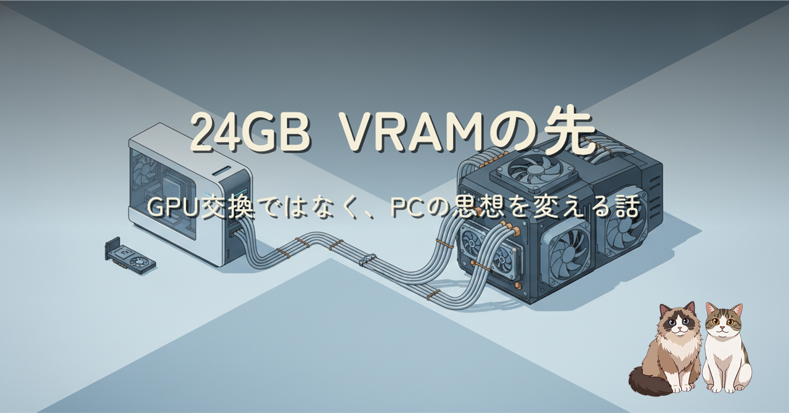
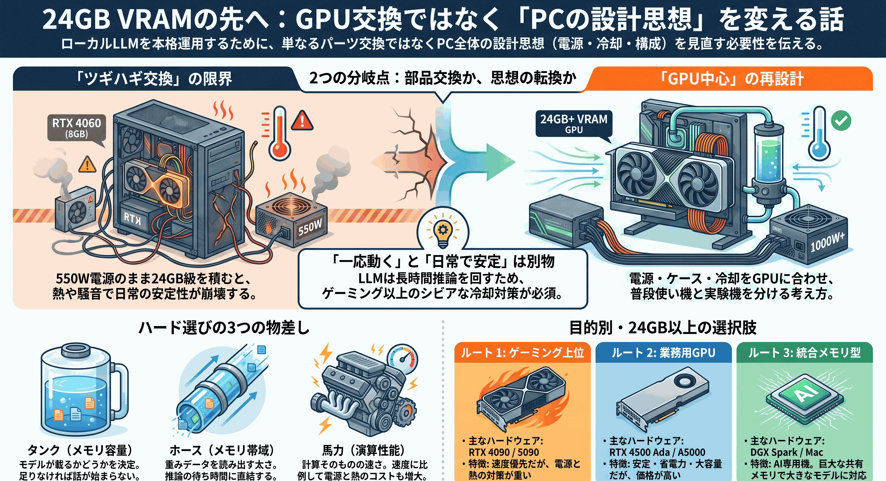
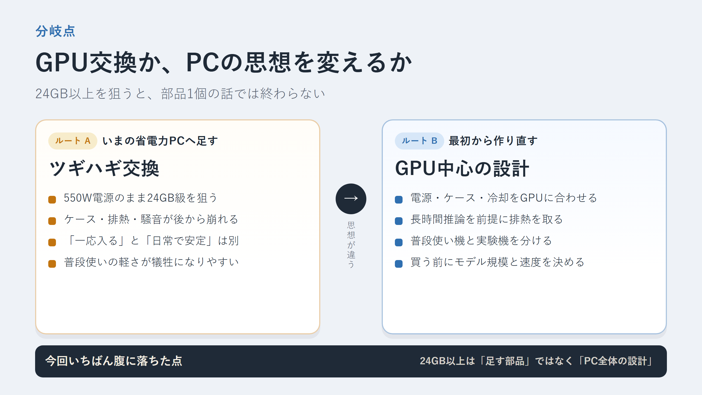
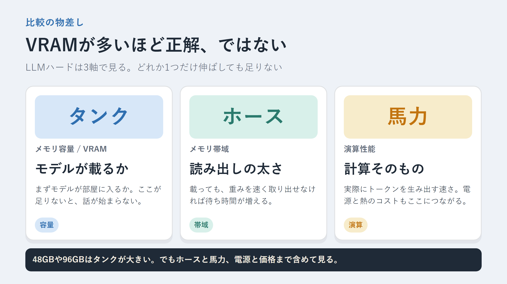
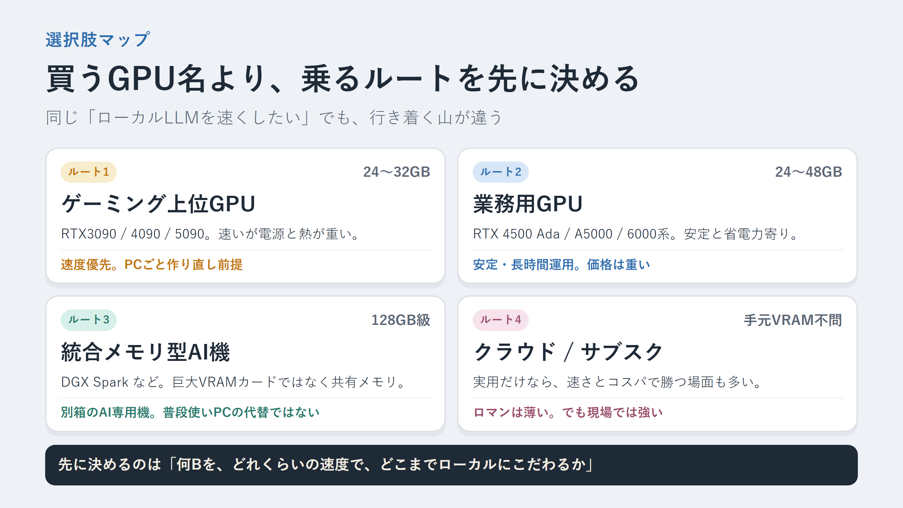

RTX4060の8GBでローカルLLMに挑んで、何度か全滅しました。じゃあ24GB以上を積めばいいのか。そう思って調べた結果、選択肢は思ったより多かった。ただし、それは今の省電力PCにGPUを足す話ではなく、PC全体の設計思想を変える話でした。
前回のローカルLLM全滅記2では、メインメモリを96GB近くまで増やしても、フリーズは避けられるだけで実用速度にはならないところまで追い込みました。その先として、RTX3090/4090/5090、業務用GPU、DGX Spark、さらにその上のDGX Stationまでを調べた記録です。
結論はシンプルです。24GB以上のVRAMはある。でも、今のRTX4060向け省電力PCに足すものではない。ゲーミング上位、業務用、統合メモリ型、クラウドはそれぞれ別ルート。買うGPU名より先に、「何Bを、どれくらいの速度で、どこまでローカルにこだわるか」を決める。今回の整理はそこまでです。



